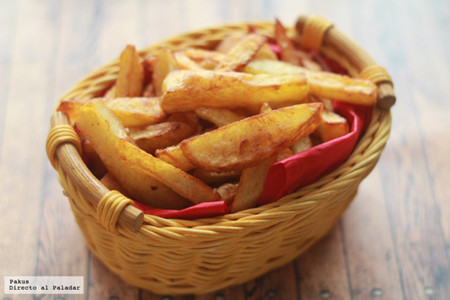

Patatas fritas
Receta de patatas fritas caseras

Ingredientes
3 o 4 patatas (300gr)
4 dientes de ajo
Aceite de Oliva
Sal
Elaboración (Pasos)
Calentar el aceite en un sarten
Añadir las patatas cortadas, la sal y los ajos
Freir al gusto
Servir en Platos
Regresar